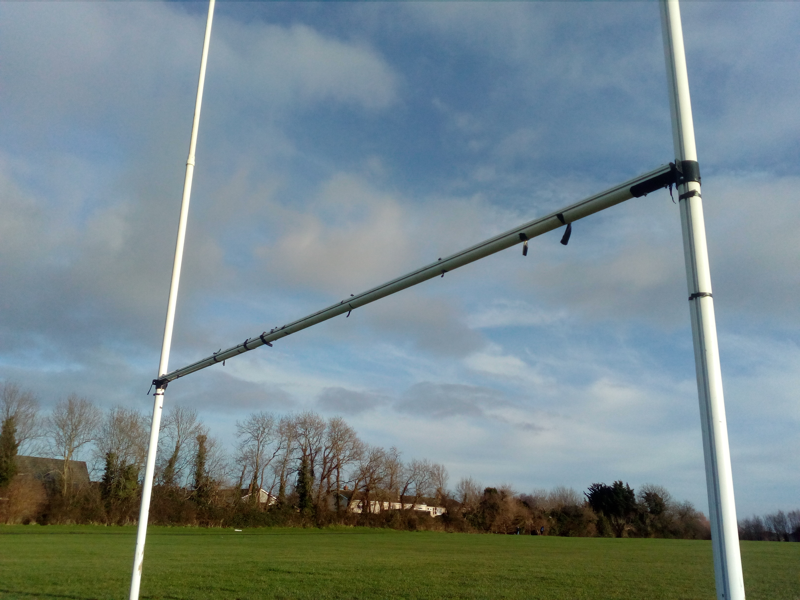

Liam Jennings' Portfolio Website
A large part of my course is photography.The following
photographs were taken by me as a part of one of the many excercises completed
during the various photography modules.
The photo shown above is one I took of the local wildlife
around the ITB campus.Notice the blurring of the background which gives focus
to the subject of the photo
The photo shown above is one I took of a local forest, the leaf
creeping into the pictures foreground highlights the small details of nature.
The photo above is a simple photo of a bench, I often aim to capture
the simplicity of everyday life in my photos and feel I have done it here.

The photo you can see above is a simple photo of a goal.
This is another example of captruing the simplicity of everyday life.
In this photo I felt there was something oddly enjoyable about
the stick on the ground, something about its geometry intrigued me and I felt
I needed to take a photo.